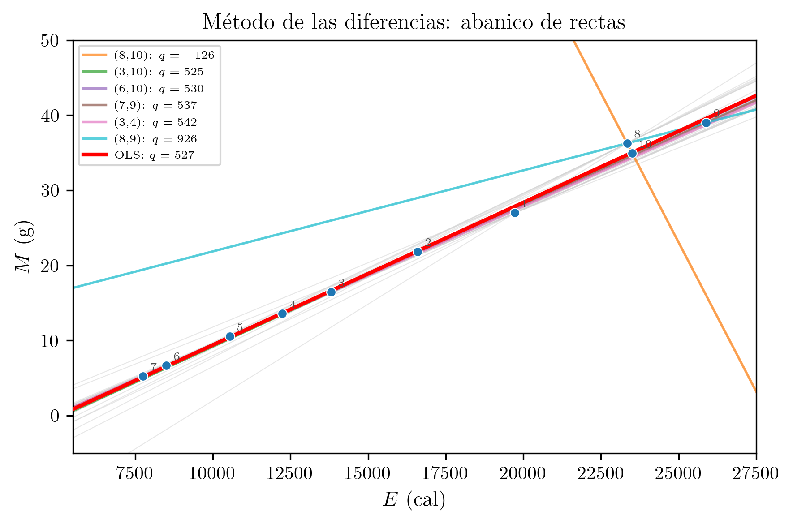
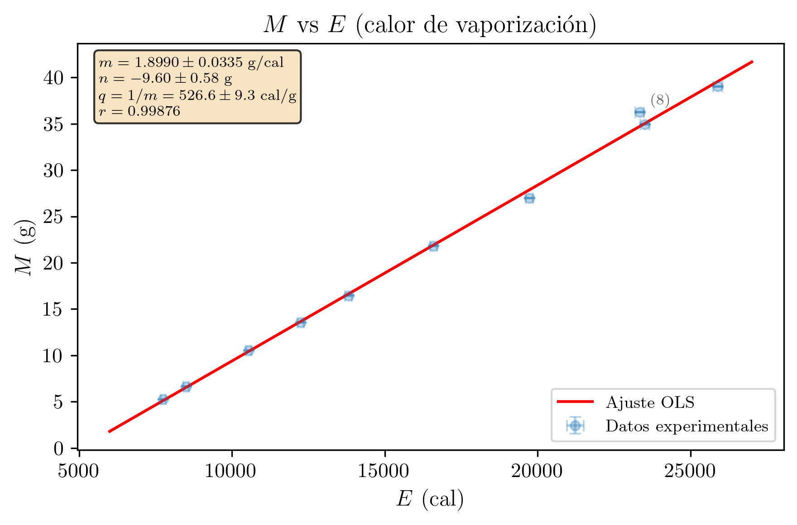
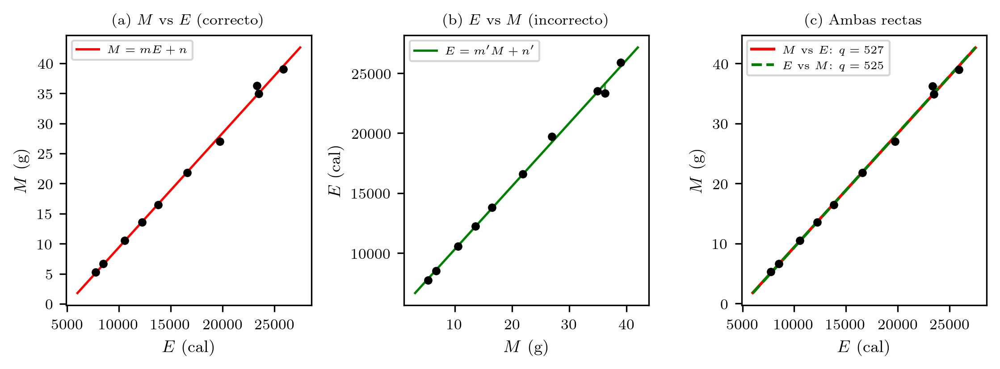
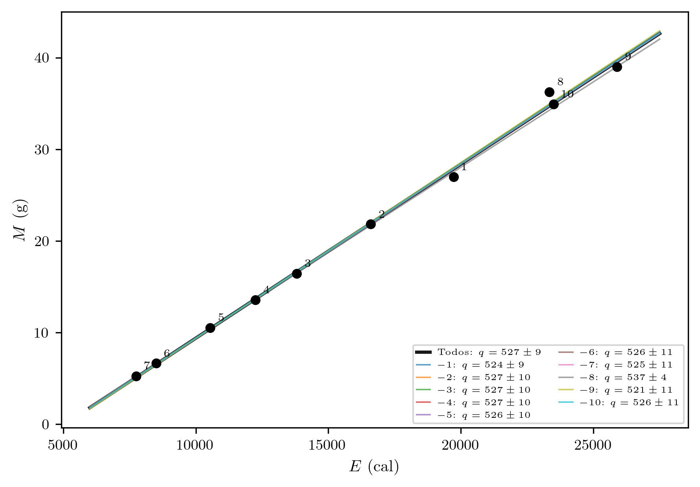
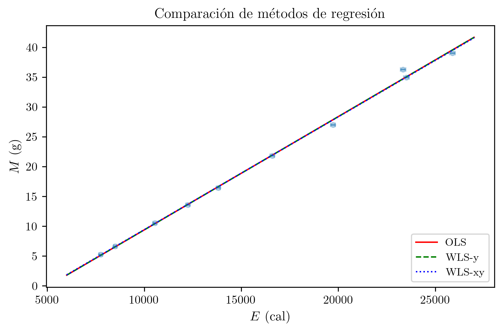

Práctica 8 — Técnicas Experimentales I
2026-03-07
Se determina experimentalmente el calor de vaporización del agua mediante calentamiento eléctrico a distintas potencias. Se mide la masa de agua evaporada para 10 niveles de potencia con un tiempo de calentamiento fijo de 360 s. Mediante regresión lineal de M frente a E (masa evaporada frente a energía suministrada), se obtiene q = (527 ± 9) cal/g, compatible con el valor teórico de 530 cal/g. Se comparan los métodos de las diferencias y de regresión lineal, y se analiza el efecto de un posible dato atípico.
| Asignatura | Técnicas Experimentales I (Cod. 61041080) |
| Práctica | Práctica 8: Calor de Vaporización del Agua |
| Alumna | María López Fernández |
| DNI | 12345678A |
| Correo electrónico | mlopezfernandez42@ejemplo.uned.es |
| Teléfono | 612 345 678 |
| Centro Asociado | Madrid - Gregorio Marañón |
| Tutor | Dr. Fernando García Martínez |
| Fecha de realización | 27 de febrero de 2026 |
| Fecha de entrega | 7 de marzo de 2026 |
El objetivo de esta práctica es la determinación experimental del calor de vaporización del agua, es decir, la energía que es necesario suministrar a un gramo de agua en ebullición para transformarlo completamente en vapor a la misma temperatura (100 C a presión atmosférica normal).
Para ello se calienta agua hasta ebullición mediante una resistencia eléctrica sumergida, a la que se suministra una potencia eléctrica conocida (W = I \cdot V). Se mide la masa de agua que se evapora durante un intervalo de tiempo fijo, y se relaciona la energía eléctrica suministrada con la masa evaporada. Repitiendo el experimento a distintas potencias se obtiene un conjunto de datos que permite calcular el calor de vaporización por dos métodos: el método de las diferencias y el ajuste por mínimos cuadrados (regresión lineal).
La comparación de los resultados experimentales con el valor teórico (q_{\text{teo}} \approx 530 cal/g) permite evaluar la calidad de las medidas y la validez del método empleado.
Las medidas se realizaron a temperatura ambiente de aproximadamente (20 \pm 2) °C y humedad relativa del (50 \pm 10)\%. La presión atmosférica del laboratorio se consideró próxima a la presión atmosférica normal (1 atm), de modo que la temperatura de ebullición del agua se toma como 100 °C.
Cuando se suministra energía eléctrica E a un sistema de agua en ebullición, parte de esa energía se emplea en evaporar agua y parte se pierde por disipación al entorno (radiación, conducción, convección). Sea:
La ecuación de balance energético es:
(W - P) \cdot \tau = (M + m) \cdot q
donde el primer miembro representa la energía neta disponible para la vaporización (energía suministrada menos pérdidas) y el segundo miembro la energía consumida en evaporar la masa M (medida) más la masa m (debida a las pérdidas ambientales).
En forma simplificada, si se desprecia las pérdidas, la energía eléctrica suministrada (en calorías) es:
E = W \cdot \tau / 4.186 = q \cdot M
donde se ha usado el factor de conversión 1 \text{ cal} = 4.186 \text{ J}.
Para eliminar las incógnitas P y m (que son constantes para un mismo montaje y condiciones ambientales), se escriben las ecuaciones para dos potencias distintas W_1 y W_2:
(W_1 - P) \cdot \tau = (M_1 + m) \cdot q
(W_2 - P) \cdot \tau = (M_2 + m) \cdot q
Restando miembro a miembro:
(W_1 - W_2) \cdot \tau = (M_1 - M_2) \cdot q
De donde:
q = \frac{(W_1 - W_2) \cdot \tau}{M_1 - M_2}
o equivalentemente, usando las energías ya convertidas a calorías (E = W \cdot \tau / 4.186):
q = \frac{E_1 - E_2}{M_1 - M_2}
Este método tiene la ventaja de eliminar las pérdidas, pero el inconveniente de que utiliza sólo dos puntos de medida, por lo que su precisión es limitada.
Partiendo de la ecuación simplificada E = q \cdot M, se puede escribir:
M = \frac{1}{q} \cdot E
Esta es una relación lineal de la forma y = m \cdot x + n, donde:
Nota importante: Se representa M (eje y) frente a E (eje x) y no al revés, porque el método de mínimos cuadrados minimiza las distancias verticales de los puntos a la recta. La variable con mayor incertidumbre (la masa evaporada M) debe ir en el eje de ordenadas, mientras que la variable que se controla (la energía E) va en el eje de abscisas. Invertir los ejes conduciría a un ajuste que minimiza distancias en la dirección incorrecta.
A partir de la pendiente del ajuste, el calor de vaporización es:
q = \frac{1}{m}
Y su incertidumbre, por propagación de errores:
\Delta q = \left|\frac{dq}{dm}\right| \cdot \sigma_m = \left|\frac{-1}{m^2}\right| \cdot \sigma_m = \frac{\sigma_m}{m^2}
El dispositivo consiste en un vaso o recipiente con agua destilada en el que se sumerge una resistencia eléctrica conectada a una fuente de alimentación de tensión variable. La resistencia calienta el agua hasta ebullición. La fuente permite ajustar la tensión aplicada y, por tanto, la potencia eléctrica suministrada al sistema.
El agua se lleva previamente a ebullición y se mantiene hirviendo durante todo el experimento. Para cada valor de potencia, se anota la intensidad I y la tensión V del circuito, y se mide la masa de agua evaporada M durante un intervalo de tiempo fijo \tau = 360 s (6 minutos). La masa evaporada se determina por diferencia de pesada del recipiente antes y después de cada medida.
Se realizan 10 medidas a diferentes niveles de potencia, variando la tensión de alimentación.
| Instrumento | Magnitud medida | Precisión |
|---|---|---|
| Amperímetro | Intensidad de corriente I | \Delta I = 0.01 A |
| Voltímetro | Tensión eléctrica V | \Delta V = 0.1 V |
| Cronómetro digital | Tiempo de calentamiento \tau | \Delta \tau = 1 s |
| Balanza | Masa de agua evaporada M | \Delta M = 0.01 g |
Calibración y trazabilidad. El amperímetro y el voltímetro son instrumentos digitales del laboratorio con certificado de calibración vigente, trazables a patrones nacionales de magnitudes eléctricas. La balanza digital dispone igualmente de certificado de calibración trazable a patrones nacionales de masa. El cronómetro digital utiliza un oscilador de cuarzo con precisión suficiente para los intervalos de tiempo medidos (360 s). No se detectaron errores sistemáticos significativos asociados a la calibración de los instrumentos durante la sesión experimental.
Incertidumbres de tipo B y distribuciones asumidas. Dado que se realizó una única medida (N = 1) de cada punto experimental, las incertidumbres de las magnitudes de entrada son de tipo B, evaluadas a partir de la resolución de los instrumentos. Se asume en todos los casos una distribución rectangular (uniforme):
u(I) = \frac{a}{\sqrt{3}} = \frac{0.005}{\sqrt{3}} = 0.00289 \text{ A}
u(V) = \frac{a}{\sqrt{3}} = \frac{0.05}{\sqrt{3}} = 0.0289 \text{ V}
u(\tau) = \frac{a}{\sqrt{3}} = \frac{0.5}{\sqrt{3}} = 0.289 \text{ s}
u(M) = \frac{a}{\sqrt{3}} = \frac{0.005}{\sqrt{3}} = 0.00289 \text{ g}
En todos los casos la distribución asumida es rectangular, apropiada cuando sólo se dispone del intervalo de posibles valores dado por la resolución del instrumento.
Fuente de alimentación
de tensión variable
┌──────────────────────┐
│ V (voltímetro) │
│ I (amperímetro) │
└───────┬──────┬───────┘
│ │
│ │ Cables
│ │
┌───────┴──────┴───────┐
│ ~~~~~~~~~~~~~~~~~~~~~~ │ <-- Agua en ebullición
│ ~~~~~~~~~~~~~~~~~~~~~~ │
│ ┌──────────┐ │
│ │Resistencia│ │ <-- Resistencia sumergida
│ │ eléctrica │ │
│ └──────────┘ │
│ │
│ Vaso / recipiente │
└────────────────────────┘
│
┌────┴────┐
│ Balanza │ <-- Para medir masa evaporada
└─────────┘Figura 1. Esquema del dispositivo experimental para la determinación del calor de vaporización del agua.
Se realizaron 10 medidas a diferentes potencias eléctricas, manteniendo el tiempo de calentamiento constante en \tau = 360 s para todas las medidas. Para cada medida se registró la intensidad I, la tensión V, la potencia W = I \cdot V, la energía suministrada en calorías E = W \cdot \tau / 4.186, y la masa de agua evaporada M.
Regla de error aplicada: Se ha realizado N = 1 medida para cada punto de potencia. Por tanto, no se dispone de estadística de repetición y la incertidumbre de cada magnitud es el error instrumental (precisión del aparato):
\varepsilon = \varepsilon_p \quad (\text{para } N = 1)
Identificación de fuentes de error aleatorio y sistemático.
Errores aleatorios:
Errores sistemáticos:
Tabla 1. Datos experimentales: intensidad, tensión, potencia, energía y masa evaporada.
| Medida | I (A) | V (V) | W = I \cdot V (W) | E (cal) | M (g) |
|---|---|---|---|---|---|
| 1 | 1.60 | 143.3 | 229.28 | 19727.72 | 26.98 |
| 2 | 1.45 | 133.0 | 192.85 | 16593.21 | 21.82 |
| 3 | 1.28 | 125.4 | 160.51 | 13810.78 | 16.45 |
| 4 | 1.21 | 117.6 | 142.30 | 12243.44 | 13.56 |
| 5 | 1.12 | 109.4 | 122.53 | 10542.56 | 10.52 |
| 6 | 1.00 | 98.8 | 98.80 | 8500.96 | 6.64 |
| 7 | 0.95 | 94.8 | 90.06 | 7748.95 | 5.26 |
| 8 | 1.66 | 163.4 | 271.24 | 23338.39 | 36.26 |
| 9 | 1.73 | 173.9 | 300.85 | 25885.50 | 39.01 |
| 10 | 1.63 | 167.6 | 273.19 | 23505.66 | 34.93 |
Ejemplo de cálculo de la energía (Medida 1):
W_1 = I_1 \cdot V_1 = 1.60 \times 143.3 = 229.28 \text{ W}
E_1 = \frac{W_1 \cdot \tau}{4.186} = \frac{229.28 \times 360}{4.186} = \frac{82540.80}{4.186} = 19727.72 \text{ cal}
Se aplica el método de las diferencias utilizando pares de datos a distinta potencia.
Par 1: Mayor y menor potencia (Medidas 9 y 7).
E_9 = 25885.50 \text{ cal}, \quad M_9 = 39.01 \text{ g}
E_7 = 7748.95 \text{ cal}, \quad M_7 = 5.26 \text{ g}
q = \frac{E_9 - E_7}{M_9 - M_7} = \frac{25885.50 - 7748.95}{39.01 - 5.26} = \frac{18136.55}{33.75} = 537.4 \text{ cal/g}
Par 2: Medidas 10 y 6.
E_{10} = 23505.66 \text{ cal}, \quad M_{10} = 34.93 \text{ g}
E_6 = 8500.96 \text{ cal}, \quad M_6 = 6.64 \text{ g}
q = \frac{E_{10} - E_6}{M_{10} - M_6} = \frac{23505.66 - 8500.96}{34.93 - 6.64} = \frac{15004.70}{28.29} = 530.4 \text{ cal/g}
Observaciones sobre el método de las diferencias:
Los dos ejemplos anteriores muestran que el resultado depende de qué par se elija. Para estudiar esta variabilidad de forma sistemática, se calcula q_{ij} = (E_i - E_j)/(M_i - M_j) para las \binom{10}{2} = 45 combinaciones posibles de pares de medidas. La incertidumbre de cada valor se obtiene por propagación de errores:
\Delta q_{ij} = \frac{\sqrt{\sigma_{E_i}^2 + \sigma_{E_j}^2 + 2\,q_{ij}^2\,\sigma_M^2}}{|M_i - M_j|}
donde \sigma_{E_i} = \frac{\tau}{4.186}\sqrt{(V_i \,\Delta I)^2 + (I_i \,\Delta V)^2} y \sigma_M = 0.01 g. Nótese que \Delta q_{ij} \propto 1/|M_i - M_j|: cuanto más cercanos sean los puntos en masa evaporada, mayor será la incertidumbre.
Tabla 1b. Calor de vaporización q_{ij} para los 45 pares posibles, ordenados por valor de q.
| Par (i, j) | q_{ij} (cal/g) | \Delta q_{ij} (cal/g) |
|---|---|---|
| (8, 10) | -125.8 | 152.1 |
| (1, 8) | 389.1 | 20.3 |
| (2, 8) | 467.1 | 12.6 |
| (1, 10) | 475.2 | 24.0 |
| (3, 8) | 480.9 | 9.0 |
| (4, 8) | 488.8 | 7.7 |
| (5, 8) | 497.1 | 6.6 |
| (6, 8) | 500.9 | 5.6 |
| (7, 8) | 502.9 | 5.3 |
| (1, 9) | 511.9 | 16.2 |
| (2, 3) | 518.1 | 29.5 |
| (3, 10) | 524.6 | 9.8 |
| (5, 6) | 526.2 | 32.9 |
| (2, 4) | 526.6 | 18.6 |
| (4, 10) | 527.0 | 8.3 |
| (2, 10) | 527.3 | 14.1 |
| (6, 10) | 530.4 | 5.9 |
| (5, 10) | 531.1 | 7.1 |
| (7, 10) | 531.1 | 5.6 |
| (5, 7) | 531.1 | 23.8 |
| (2, 6) | 533.1 | 9.5 |
| (2, 7) | 534.1 | 8.5 |
| (3, 9) | 535.2 | 8.2 |
| (2, 5) | 535.5 | 13.2 |
| (4, 9) | 536.0 | 7.1 |
| (6, 9) | 537.1 | 5.3 |
| (7, 9) | 537.4 | 5.1 |
| (5, 9) | 538.5 | 6.2 |
| (2, 9) | 540.6 | 11.0 |
| (4, 6) | 540.8 | 19.2 |
| (3, 6) | 541.3 | 14.1 |
| (4, 7) | 541.5 | 15.8 |
| (3, 7) | 541.7 | 12.2 |
| (3, 4) | 542.3 | 51.5 |
| (6, 7) | 544.9 | 85.9 |
| (3, 5) | 551.1 | 24.3 |
| (1, 7) | 551.5 | 6.9 |
| (1, 6) | 552.0 | 7.4 |
| (1, 4) | 557.7 | 12.0 |
| (1, 5) | 558.0 | 9.5 |
| (4, 5) | 559.5 | 45.8 |
| (1, 3) | 561.9 | 15.7 |
| (9, 10) | 583.3 | 51.2 |
| (1, 2) | 607.5 | 32.8 |
| (8, 9) | 926.2 | 75.2 |
Resumen estadístico de los 45 valores de q:
| Valor | |
|---|---|
| Mínimo | -125.8 cal/g |
| Máximo | 926.2 cal/g |
| Media | 523.3 cal/g |
| Desv. estándar | 120.0 cal/g |
| Mediana | 535.2 cal/g |
La tabla revela una dispersión enorme: los valores de q abarcan un rango muy amplio, incluyendo valores negativos (físicamente absurdos) y valores superiores a 900 cal/g, dependiendo del par elegido. Los pares formados por puntos cercanos entre sí en masa evaporada (como el par 8-10, con |M_8 - M_{10}| = 1.33 g) producen resultados extremos, porque el pequeño denominador |M_i - M_j| amplifica cualquier error en las medidas. En contraste, los pares con gran separación (como el par 7-9, con |M_9 - M_7| = 33.75 g) producen valores próximos al teórico. Las incertidumbres \Delta q_{ij} muestran el mismo patrón: son enormes para pares cercanos y razonables para pares alejados.
Para apreciar gráficamente esta sensibilidad, se representan las rectas que pasan por cada uno de los 45 pares posibles (en gris claro), junto con una selección de pares representativos (en color) y la recta de regresión OLS (roja). Cada recta tiene pendiente 1/q_{ij} y pasa por los dos puntos del par correspondiente, extendida a todo el intervalo experimental.

El abanico de rectas grises ilustra la limitación fundamental del método de las diferencias: con sólo dos puntos no hay restricción estadística suficiente sobre la pendiente, y pequeños errores en M o E pueden producir pendientes — y por tanto valores de q — muy diferentes del verdadero. Los pares de puntos cercanos entre sí producen rectas con pendientes extremas (muy empinadas o incluso con pendiente negativa), mientras que los pares alejados producen rectas más próximas a la de regresión. La recta OLS (roja), que utiliza simultáneamente los 10 puntos, queda en el centro del abanico y representa el compromiso óptimo que minimiza la influencia de los errores individuales.
Se ajusta el modelo lineal M = m \cdot E + n a los N_p = 10 puntos experimentales, donde la pendiente m = 1/q y la ordenada en el origen n debería ser aproximadamente cero.
Tabla 2. Datos para la regresión lineal (x_i = E_i, y_i = M_i).
| i | x_i = E_i (cal) | y_i = M_i (g) | x_i^2 | x_i \cdot y_i | y_i^2 |
|---|---|---|---|---|---|
| 1 | 19727.72 | 26.98 | 389182936.40 | 532253.89 | 727.92 |
| 2 | 16593.21 | 21.82 | 275334618.10 | 362063.84 | 476.11 |
| 3 | 13810.78 | 16.45 | 190737644.21 | 227187.33 | 270.60 |
| 4 | 12243.44 | 13.56 | 149901823.03 | 166021.05 | 183.87 |
| 5 | 10542.56 | 10.52 | 111145571.35 | 110907.73 | 110.67 |
| 6 | 8500.96 | 6.64 | 72266320.92 | 56446.37 | 44.09 |
| 7 | 7748.95 | 5.26 | 60046226.10 | 40759.48 | 27.67 |
| 8 | 23338.39 | 36.26 | 544680447.79 | 846250.02 | 1314.79 |
| 9 | 25885.50 | 39.01 | 670059110.25 | 1009793.36 | 1521.78 |
| 10 | 23505.66 | 34.93 | 552516052.04 | 821052.70 | 1220.10 |
Sumas (N_p = 10):
| Suma | Valor |
|---|---|
| \sum x_i | 161897.17 |
| \sum y_i | 211.43 |
| \sum x_i^2 | 3015870750.20 |
| \sum x_i y_i | 4172735.77 |
| \sum y_i^2 | 5897.61 |
Determinante:
\Delta = N_p \sum x_i^2 - \left(\sum x_i\right)^2 = 10 \times 3015870750.20 - (161897.17)^2
\Delta = 30158707502.00 - 26210693654.01 = 3948013847.99
Pendiente m:
m = \frac{N_p \sum x_i y_i - \sum x_i \sum y_i}{\Delta} = \frac{10 \times 4172735.77 - 161897.17 \times 211.43}{3948013847.99}
m = \frac{41727357.68 - 34229918.65}{3948013847.99} = \frac{7497439.03}{3948013847.99}
\boxed{m = 0.001899}
Ordenada en el origen n:
n = \frac{\sum x_i^2 \sum y_i - \sum x_i \sum x_i y_i}{\Delta} = \frac{3015870750.20 \times 211.43 - 161897.17 \times 4172735.77}{3948013847.99}
n = \frac{637645552714.76 - 675554111996.98}{3948013847.99} = \frac{-37908559282.21}{3948013847.99}
\boxed{n = -9.60 \text{ g}}
Varianza residual y desviaciones típicas:
Se calculan los residuos r_i = y_i - m x_i - n para cada punto:
| i | y_i | m x_i + n | r_i | r_i^2 |
|---|---|---|---|---|
| 1 | 26.98 | 27.86 | -0.88 | 0.7776 |
| 2 | 21.82 | 21.91 | -0.09 | 0.0080 |
| 3 | 16.45 | 16.63 | -0.18 | 0.0307 |
| 4 | 13.56 | 13.65 | -0.09 | 0.0079 |
| 5 | 10.52 | 10.42 | 0.10 | 0.0102 |
| 6 | 6.64 | 6.54 | 0.10 | 0.0097 |
| 7 | 5.26 | 5.11 | 0.15 | 0.0214 |
| 8 | 36.26 | 34.72 | 1.54 | 2.3759 |
| 9 | 39.01 | 39.56 | -0.55 | 0.2978 |
| 10 | 34.93 | 35.04 | -0.11 | 0.0113 |
\sum r_i^2 = 3.5504
Análisis de residuos. Los grados de libertad de la varianza residual son \nu_{\text{fit}} = N_p - 2 = 10 - 2 = 8. Los residuos no presentan una tendencia sistemática clara: alternan de signo sin un patrón monótono o periódico evidente. El residuo de mayor magnitud corresponde al punto 8 (r_8 = 1.54 g), que destaca significativamente respecto a los demás. Este punto supera 2S \approx 1.33 g (calculado a continuación), lo que sugiere que puede ser un dato atípico, aunque no se elimina del análisis (véase la Cuestión 2 para una discusión detallada). Los restantes residuos son pequeños (|r_i| < 1 g para i \neq 8) y no muestran estructura sistemática, lo que respalda la validez del modelo lineal M = m \cdot E + n.
S^2 = \frac{\sum r_i^2}{N_p - 2} = \frac{3.5504}{8} = 0.4438
\sigma_m = \sqrt{\frac{N_p \cdot S^2}{\Delta}} = \sqrt{\frac{10 \times 0.4438}{3948013847.99}} = \sqrt{1.124 \times 10^{-9}} = 3.353 \times 10^{-5}
\sigma_n = \sqrt{\frac{\sum x_i^2 \cdot S^2}{\Delta}} = \sqrt{\frac{3015870750.20 \times 0.4438}{3948013847.99}} = \sqrt{0.3390} = 0.5823
Coeficiente de correlación:
r = \frac{N_p \sum x_i y_i - \sum x_i \sum y_i}{\sqrt{\left(N_p \sum x_i^2 - (\sum x_i)^2\right)\left(N_p \sum y_i^2 - (\sum y_i)^2\right)}}
r = \frac{7497439.03}{\sqrt{3948013847.99 \times 14273.45}} = \frac{7497439.03}{\sqrt{56351762861340.20}} = \frac{7497439.03}{7506781.13}
\boxed{r = 0.99876}
El valor de r es muy próximo a 1, lo que indica una excelente correlación lineal entre la masa evaporada y la energía suministrada.
Resumen del ajuste lineal:
| Parámetro | Valor |
|---|---|
| m (pendiente) | (1.899 \pm 0.034) \times 10^{-3} g/cal |
| n (ordenada) | (-9.6 \pm 0.6) g |
| r (correlación) | 0.99876 |
De la pendiente del ajuste:
q = \frac{1}{m} = \frac{1}{0.001899} = 526.6 \text{ cal/g}
Propagación de la incertidumbre. Dado que q = 1/m:
\frac{dq}{dm} = \frac{-1}{m^2}
\Delta q = \left|\frac{dq}{dm}\right| \cdot \sigma_m = \frac{\sigma_m}{m^2} = \frac{3.353 \times 10^{-5}}{(1.899 \times 10^{-3})^2} = \frac{3.353 \times 10^{-5}}{3.606 \times 10^{-6}} = 9.3 \text{ cal/g}
Redondeando el error a 1 cifra significativa (como empieza por 9, se mantiene 1 cifra significativa):
\boxed{q_{\text{exp}} = (527 \pm 9) \text{ cal/g}}
Error relativo:
\delta q = \frac{\Delta q}{q_{\text{exp}}} \times 100 = \frac{9}{527} \times 100 = 1.7\%
Se representa la masa evaporada M (g) en el eje de ordenadas frente a la energía suministrada E (cal) en el eje de abscisas. Cada punto experimental lleva barras de error verticales (\Delta M = 0.01 g, demasiado pequeñas para ser visibles a esta escala). Se traza la recta de regresión M = m \cdot E + n.

Ejes: Eje horizontal: E (cal). Eje vertical: M (g). Barras de error verticales en cada punto (\Delta M = 0.01 g). Recta de regresión superpuesta.
Observaciones: Se observa que el punto 8 (E = 23338 cal, M = 36.26 g) se separa ligeramente de la tendencia general, presentando el mayor residuo del ajuste (r_8 = 1.54 g).
El valor teórico del calor de vaporización del agua a 100 C y 1 atm es:
q_{\text{teo}} = 530 \text{ cal/g}
Criterio de compatibilidad:
|q_{\text{exp}} - q_{\text{teo}}| = |527 - 530| = 3 \text{ cal/g}
\Delta q_{\text{exp}} = 9 \text{ cal/g}
Dado que 3 \leq 9:
\boxed{|q_{\text{exp}} - q_{\text{teo}}| \leq \Delta q_{\text{exp}} \quad \Longrightarrow \quad \text{Los valores son compatibles.}}
El valor experimental del calor de vaporización es compatible con el valor teórico dentro del margen de incertidumbre experimental.
Error relativo respecto al valor teórico:
\delta q_{\text{rel}} = \frac{|q_{\text{exp}} - q_{\text{teo}}|}{q_{\text{teo}}} \times 100 = \frac{3}{530} \times 100 = 0.6\%
| Método | q (cal/g) | Observación |
|---|---|---|
| Diferencias (par 1: medidas 9 y 7) | 537.4 | Solo 2 puntos |
| Diferencias (par 2: medidas 10 y 6) | 530.4 | Solo 2 puntos |
| Regresión lineal (10 puntos) | (527 \pm 9) | Todos los datos, con error |
| Valor teórico | 530 | Referencia |
El método de las diferencias produce resultados que varían significativamente según el par elegido (537.4 vs 530.4 cal/g), lo que refleja su limitación: al usar sólo dos puntos, es muy sensible a los errores individuales de cada medida. El método de regresión, en cambio, utiliza toda la información disponible (10 puntos) y proporciona tanto un valor central como una estimación de su incertidumbre, siendo por tanto un método superior.
Se presenta a continuación el análisis completo de incertidumbres para el calor de vaporización q obtenido por el método de regresión lineal, siguiendo las directrices de la GUM (Guide to the Expression of Uncertainty in Measurement).
El calor de vaporización se obtiene a partir de la pendiente m del ajuste lineal M = m \cdot E + n:
q = f(m) = \frac{1}{m}
En este caso, el mensurando q depende de una única magnitud de entrada: la pendiente m del ajuste por mínimos cuadrados. La incertidumbre de m es de tipo A, ya que proviene de la dispersión estadística de los datos experimentales alrededor de la recta de regresión. Los grados de libertad asociados son \nu_m = N_p - 2 = 10 - 2 = 8.
No obstante, conviene analizar también las contribuciones de tipo B procedentes de los instrumentos de medida para verificar si son despreciables frente a la contribución del ajuste.
Las magnitudes medidas directamente son I, V, \tau y M. La energía E = I \cdot V \cdot \tau / 4.186 depende de las tres primeras. La incertidumbre de E debida a los instrumentos es:
u_B(E) = E \sqrt{\left(\frac{u(I)}{I}\right)^2 + \left(\frac{u(V)}{V}\right)^2 + \left(\frac{u(\tau)}{\tau}\right)^2}
Para un punto típico (Medida 1: I = 1.60 A, V = 143.3 V, \tau = 360 s):
\frac{u(I)}{I} = \frac{0.00289}{1.60} = 0.0018
\frac{u(V)}{V} = \frac{0.0289}{143.3} = 0.00020
\frac{u(\tau)}{\tau} = \frac{0.289}{360} = 0.00080
u_B(E)/E = \sqrt{(0.0018)^2 + (0.00020)^2 + (0.00080)^2} = \sqrt{3.88 \times 10^{-6}} = 0.0020
Esta incertidumbre relativa de E (0.2%) es mucho menor que la dispersión relativa de los residuos del ajuste (S/\bar{M} \approx 0.67/21 \approx 3\%). Por tanto, las incertidumbres instrumentales de tipo B son completamente despreciables frente a la incertidumbre del ajuste (tipo A), y la incertidumbre del resultado está dominada por la dispersión estadística de los datos. Análogamente, u(M) = 0.00289 g es despreciable frente a los residuos típicos del ajuste (\sim 0.1 - 1.5 g).
c_m = \frac{\partial q}{\partial m} = \frac{-1}{m^2} = \frac{-1}{(1.899 \times 10^{-3})^2} = -2.773 \times 10^{5} \text{ cal}^2 \cdot \text{g}^{-1}
La incertidumbre combinada de q se obtiene combinando la contribución de tipo A (dominante) y las de tipo B (despreciables) por RSS:
u_c(q) = \sqrt{(c_m \cdot u_A(m))^2 + (c_m \cdot u_B(m))^2} \approx |c_m| \cdot u_A(m) = \frac{\sigma_m}{m^2}
dado que u_B(m) \ll u_A(m). Por tanto:
u_c(q) = \frac{\sigma_m}{m^2} = \frac{3.353 \times 10^{-5}}{(1.899 \times 10^{-3})^2} = \frac{3.353 \times 10^{-5}}{3.606 \times 10^{-6}} = 9.3 \text{ cal/g}
Tabla 3. Balance de incertidumbres para el calor de vaporización q = 1/m.
| Magnitud de entrada | Estimación | u(x_i) | Tipo | c_i | |c_i \cdot u(x_i)| (cal/g) | \nu_i |
|---|---|---|---|---|---|---|
| m (g/cal) | 1.899 \times 10^{-3} | 3.353 \times 10^{-5} | A | -1/m^2 = -2.773 \times 10^{5} | 9.3 | 8 |
| I (A) | (varios) | 0.00289 | B (rectangular) | (vía E) | despreciable | 50 |
| V (V) | (varios) | 0.0289 | B (rectangular) | (vía E) | despreciable | 50 |
| \tau (s) | 360 | 0.289 | B (rectangular) | (vía E) | despreciable | 50 |
| M (g) | (varios) | 0.00289 | B (rectangular) | directo | despreciable | 50 |
| u_c(q) | 9.3 cal/g |
Las contribuciones de tipo B de los instrumentos (I, V, \tau, M) son todas despreciables frente a la contribución de tipo A de la pendiente m, que domina completamente la incertidumbre del resultado.
Se aplica la fórmula de Welch-Satterthwaite para calcular los grados de libertad efectivos \nu_{\text{eff}}. Dado que la incertidumbre está dominada por una única fuente (la pendiente m, con \nu_m = 8), el cálculo se simplifica:
\nu_{\text{eff}} = \frac{u_c^4(q)}{\displaystyle\sum_i \frac{(c_i \cdot u(x_i))^4}{\nu_i}} \approx \frac{u_c^4(q)}{\dfrac{u_c^4(q)}{\nu_m}} = \nu_m = 8
Más formalmente, incluyendo las contribuciones de tipo B (con \nu_i = 50):
\nu_{\text{eff}} = \frac{(9.3)^4}{\dfrac{(9.3)^4}{8} + \text{términos despreciables}} \approx 8
Truncando: \nu_{\text{eff}} = 8.
Para un nivel de confianza del 95% y \nu_{\text{eff}} = 8 grados de libertad, el factor de cobertura de la distribución t de Student es:
k = t_{95\%,\,8} = 2.306
La incertidumbre expandida es:
U(q) = k \cdot u_c(q) = 2.306 \times 9.3 = 21 \text{ cal/g}
Resultado final:
\boxed{q_{\text{exp}} = (527 \pm 21) \text{ cal/g}, \quad k = 2.306, \quad \text{nivel de confianza del 95\%}}
Verificación de compatibilidad con incertidumbre expandida:
|q_{\text{exp}} - q_{\text{teo}}| = |527 - 530| = 3 \text{ cal/g} \leq U = 21 \text{ cal/g}
El resultado experimental es compatible con el valor teórico (q_{\text{teo}} = 530 cal/g) dentro de la incertidumbre expandida al 95% de confianza.
Fuentes dominantes de incertidumbre. La incertidumbre del calor de vaporización está completamente dominada por la dispersión de los datos experimentales alrededor de la recta de regresión (tipo A). Las incertidumbres instrumentales de tipo B (I, V, \tau, M) son despreciables. La principal fuente de dispersión es la variabilidad en la masa de agua evaporada M entre medidas a diferentes potencias, que refleja las fluctuaciones en las condiciones de ebullición y las pérdidas térmicas.
El punto 8 (r_8 = 1.54 g) es el que más contribuye a la varianza residual: por sí solo aporta r_8^2 = 2.38 de un total de \sum r_i^2 = 3.55 (el 67%). Si este punto se excluyera, la incertidumbre se reduciría significativamente, pero se perdería la compatibilidad con el valor teórico (véase Cuestión 2).
Adecuación de la incertidumbre. La incertidumbre expandida obtenida (U = 21 cal/g, error relativo del 4%) es adecuada para el propósito de la práctica, que es determinar el calor de vaporización del agua y compararlo con el valor tabulado. El resultado es compatible con q_{\text{teo}} = 530 cal/g con amplio margen.
Sugerencias para reducir la incertidumbre. La mejora más efectiva sería:
La regresión por mínimos cuadrados minimiza la suma de los cuadrados de las distancias verticales de los puntos experimentales a la recta ajustada. Esto implica que el método asume que toda la incertidumbre está concentrada en la variable representada en el eje de ordenadas (y), mientras que la variable del eje de abscisas (x) se considera conocida con precisión.
En este experimento:
Por tanto, M debe ir en el eje y (variable dependiente) y E en el eje x (variable independiente). Si se invirtieran los ejes, el ajuste minimizaría distancias en la dirección de E (que es la variable mejor conocida), lo cual no sería estadísticamente correcto. Además, la relación M = (1/q) \cdot E permite obtener q = 1/m directamente de la pendiente, lo cual es más natural físicamente.
La Figura 3 ilustra visualmente este argumento mediante tres paneles.

En el panel (a), la regresión de M frente a E minimiza los residuos verticales (rojo), que corresponden a errores en M, la variable más incierta. En el panel (b), la regresión inversa minimiza residuos en la dirección de E, la variable mejor conocida, lo cual no es estadísticamente óptimo. En el panel (c) se superponen ambas rectas: no coinciden exactamente porque m_1 \cdot m_2 = r^2 \neq 1. La regresión M vs E da q = 1/m_1, mientras que E vs M da q = m_2 = r^2/m_1; la diferencia es proporcional a (1-r^2) y, aunque pequeña aquí (r \approx 0.999), el principio es claro: la regresión siempre optimiza en la dirección de la variable dependiente.
El punto 8 (E = 23338.39 cal, M = 36.26 g) presenta el mayor residuo en el ajuste (r_8 = 1.54 g), lo que sugiere que podría ser un dato atípico. Para evaluar su efecto, se repite la regresión eliminándolo.
Regresión sin el punto 8 (N_p = 9):
| Suma | Valor |
|---|---|
| \sum x_i | 138558.78 |
| \sum y_i | 175.17 |
| \sum x_i^2 | 2471190302.41 |
| \sum x_i y_i | 3326485.75 |
| \sum y_i^2 | 4582.82 |
\Delta = 9 \times 2471190302.41 - (138558.78)^2 = 22240712721.69 - 19198537361.33 = 3042175360.36
m' = 0.001863, \quad n' = -9.22 \text{ g}
\sigma_{m'} = 1.405 \times 10^{-5}, \quad r' = 0.99980
q' = \frac{1}{m'} = 536.8 \text{ cal/g}, \quad \Delta q' = \frac{\sigma_{m'}}{(m')^2} = \frac{1.405 \times 10^{-5}}{(1.863 \times 10^{-3})^2} = 4.0 \text{ cal/g}
\boxed{q'_{\text{exp}} = (537 \pm 4) \text{ cal/g}} \quad (\text{sin punto 8})
Comparación:
| Con 10 puntos | Sin punto 8 (9 puntos) | |
|---|---|---|
| q (cal/g) | 527 \pm 9 | 537 \pm 4 |
| r | 0.99876 | 0.99980 |
| Compatible con q_{\text{teo}} = 530? | Sí (|527-530| = 3 \leq 9) | No (|537-530| = 7 > 4) |
Al eliminar el punto 8:
Para cuantificar la influencia de cada punto individual, se realiza un análisis leave-one-out: se repite la regresión 10 veces, eliminando un punto distinto en cada caso. Esto permite identificar qué medidas son más influyentes en el resultado final.
| Punto eliminado | q (cal/g) | \Delta q (cal/g) | r | Compatible con q_{\text{teo}} = 530? |
|---|---|---|---|---|
| 1 | 524.1 | 8.7 | 0.99904 | Sí |
| 2 | 526.6 | 9.9 | 0.99876 | Sí |
| 3 | 526.9 | 10.0 | 0.99875 | Sí |
| 4 | 526.9 | 10.2 | 0.99870 | Sí |
| 5 | 526.1 | 10.4 | 0.99864 | Sí |
| 6 | 525.9 | 10.8 | 0.99852 | Sí |
| 7 | 525.4 | 11.0 | 0.99846 | Sí |
| 8 | 536.8 | 4.0 | 0.99980 | No |
| 9 | 521.0 | 10.6 | 0.99855 | Sí |
| 10 | 525.9 | 10.7 | 0.99855 | Sí |
| Todos (10) | 526.6 | 9.3 | 0.99876 | Sí |

La Tabla 1 y la Figura 4 muestran el resultado de eliminar cada uno de los 10 puntos individualmente. Se observa que el punto 8 es el más influyente: su eliminación produce el mayor cambio en q (de 527 a 537 cal/g) y reduce la incertidumbre notablemente (de 9 a 4 cal/g). Sin embargo, paradójicamente, el resultado con los 10 puntos es el más compatible con q_{\text{teo}} = 530 cal/g. Esto refuerza la conclusión anterior: aunque el punto 8 genera mayor dispersión, contiene información válida que mantiene el resultado centrado cerca del valor teórico. Eliminarlo mejoraría la precisión a costa de introducir un sesgo sistemático.
La ordenada en el origen del ajuste es n = -9.6 g. Físicamente, la ordenada en el origen representa la masa evaporada cuando la energía suministrada es cero (E = 0). En un modelo ideal sin pérdidas, debería ser n = 0: si no se suministra energía, no se evapora agua.
El valor negativo obtenido (n = -9.6 g) se interpreta como un efecto de las pérdidas sistemáticas del montaje. La ecuación completa del sistema es (W - P) \cdot \tau = (M + m) \cdot q, donde P representa la potencia perdida al entorno y m la masa de agua que se evaporaría por efecto de las pérdidas (la ebullición natural por el entorno). La regresión lineal M = (1/q) \cdot E + n absorbe estos términos de pérdidas en la ordenada en el origen, que por eso no es exactamente cero.
No obstante, el valor de n es relativamente pequeño comparado con los valores típicos de M (5 - 39 g), y su incertidumbre es \sigma_n = 0.58 g, lo que confirma que el efecto de las pérdidas es limitado.
Manual de Técnicas Experimentales I, versión 3.8.2. Departamento de Física Fundamental, Facultad de Ciencias, UNED. Práctica 8: Calor de vaporización del agua.
Alonso, M. y Finn, E.J. Física. Addison-Wesley Iberoamericana. Capítulo sobre termodinámica y cambios de fase.
CRC Handbook of Chemistry and Physics. Valores tabulados del calor de vaporización del agua: q = 2257 J/g = 539.2 cal/g a 100 C y 1 atm.
El método OLS minimiza la suma de los cuadrados de los residuos verticales sin ponderar. Los parámetros y sus incertidumbres se estiman a partir de la dispersión residual. Este es el método utilizado en el cuerpo del informe.
En este método, cada punto recibe un peso w_i = 1/\sigma_{y_i}^2 proporcional a la precisión de la medida de M. Dado que todas las masas se miden con la misma balanza (\sigma_M = 0.01 g), los pesos son uniformes y WLS-y produce la misma pendiente y ordenada que OLS. Las incertidumbres de los parámetros, sin embargo, se calculan a partir de la incertidumbre instrumental conocida (estimación externa) en lugar de la dispersión residual (estimación interna).
El método de varianza efectiva incorpora las incertidumbres tanto de x = E como de y = M. La energía E = I \cdot V \cdot \tau / 4.186 tiene una incertidumbre que depende de los errores del amperímetro (\Delta I = 0.01 A) y del voltímetro (\Delta V = 0.1 V):
\sigma_E = \frac{\tau}{4.186} \sqrt{(V \cdot \Delta I)^2 + (I \cdot \Delta V)^2}
La varianza efectiva es \sigma_{\text{eff},i}^2 = \sigma_{M}^2 + m^2 \sigma_{E_i}^2, que depende de la pendiente y requiere iteración. En este caso, las incertidumbres en E (del orden de 100-150 cal) son significativas comparadas con las de M (0.01 g), por lo que el término m^2 \sigma_{E_i}^2 puede ser relevante.

| Parámetro | OLS | WLS-y | WLS-xy |
|---|---|---|---|
| m (\times 10^{-3} g/cal) | 1.8990 \pm 0.0335 | 1.8990 \pm 0.0005 | 1.8926 \pm 0.0111 |
| n (g) | -9.60 \pm 0.58 | -9.60 \pm 0.01 | -9.50 \pm 0.17 |
| q = 1/m (cal/g) | 526.6 \pm 9.3 | 526.6 \pm 0.1 | 528.4 \pm 3.1 |
| r | 0.99876 | 0.99876 | 0.99876 |
En esta práctica, la variable independiente E tiene incertidumbres no despreciables (del orden de 100-150 cal, derivadas de \Delta I y \Delta V), mientras que la variable dependiente M tiene una incertidumbre instrumental muy pequeña (\sigma_M = 0.01 g). Los tres métodos difieren en cómo tratan estas incertidumbres:
OLS ignora las incertidumbres y estima los errores de los parámetros a partir de la dispersión de los residuos. Los residuos relativamente grandes (especialmente el punto 8 con r_8 = 1.54 g) producen una varianza residual elevada y, por tanto, incertidumbres amplias.
WLS-y utiliza \sigma_M = 0.01 g para ponderar. Dado que todos los pesos son iguales, la pendiente es idéntica a OLS, pero las incertidumbres resultantes son mucho menores porque se basan en la precisión instrumental (que es muy alta: 0.01 g).
WLS-xy incorpora además la incertidumbre en E. La varianza efectiva \sigma_{\mathrm{eff}}^2 = \sigma_M^2 + m^2 \sigma_E^2 está dominada por el término m^2 \sigma_E^2 (ya que m \cdot \sigma_E \sim 0.001899 \times 130 \approx 0.25 g, mucho mayor que \sigma_M = 0.01 g). Esto asigna pesos no uniformes según la incertidumbre en energía de cada punto.
La diferencia clave está en la discrepancia entre la estimación interna (OLS, basada en residuos) y la externa (WLS, basada en incertidumbres instrumentales). Si los residuos son mucho mayores que lo esperado por las incertidumbres instrumentales, esto indica que el modelo lineal no captura toda la variabilidad de los datos, o que existen fuentes de error sistemático no contempladas (como las pérdidas térmicas variables).